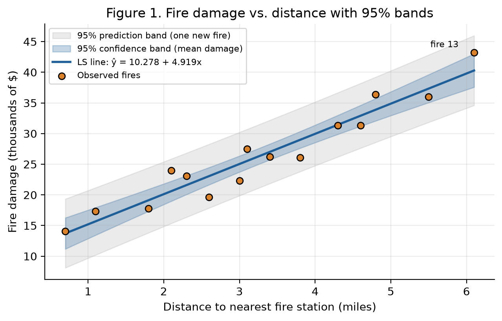
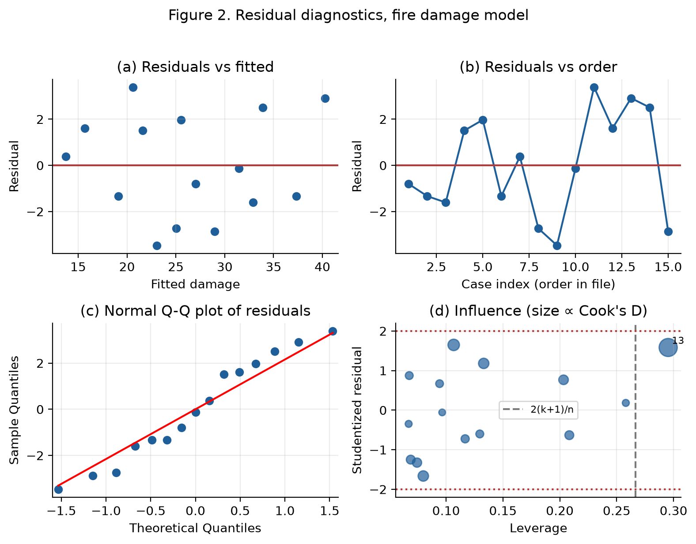
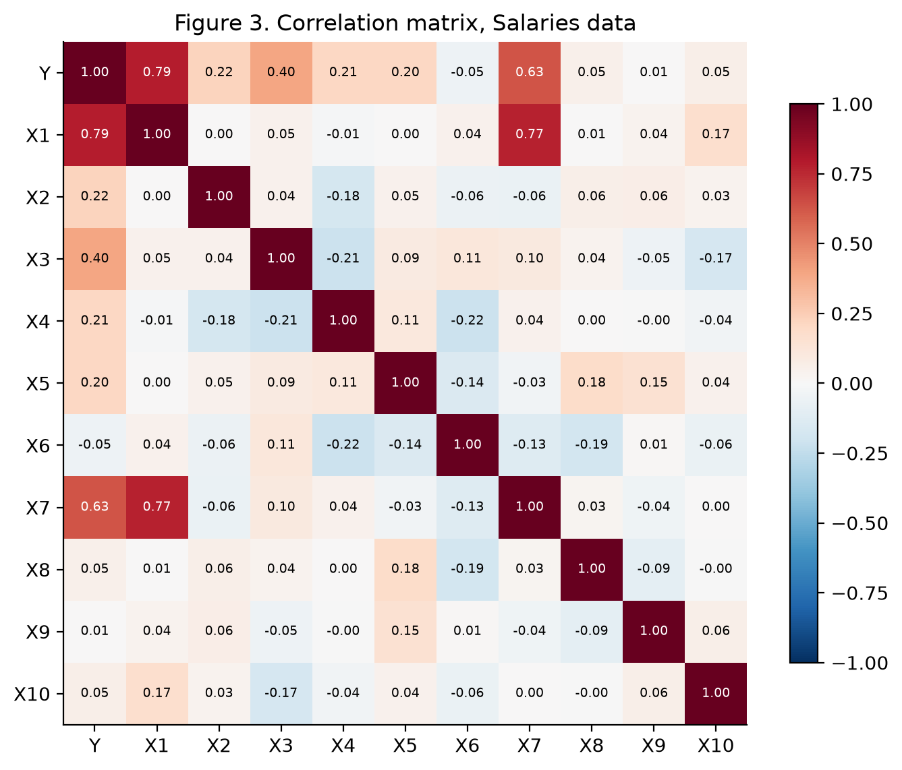
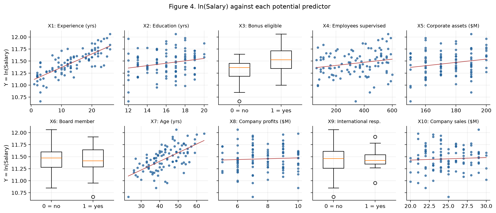
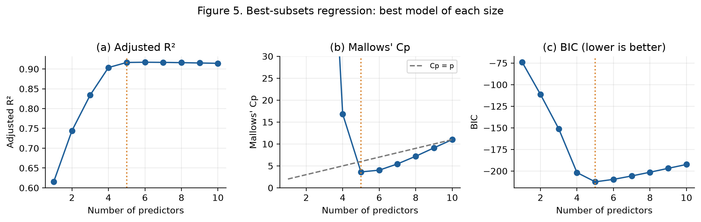
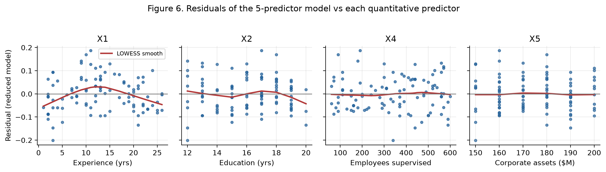
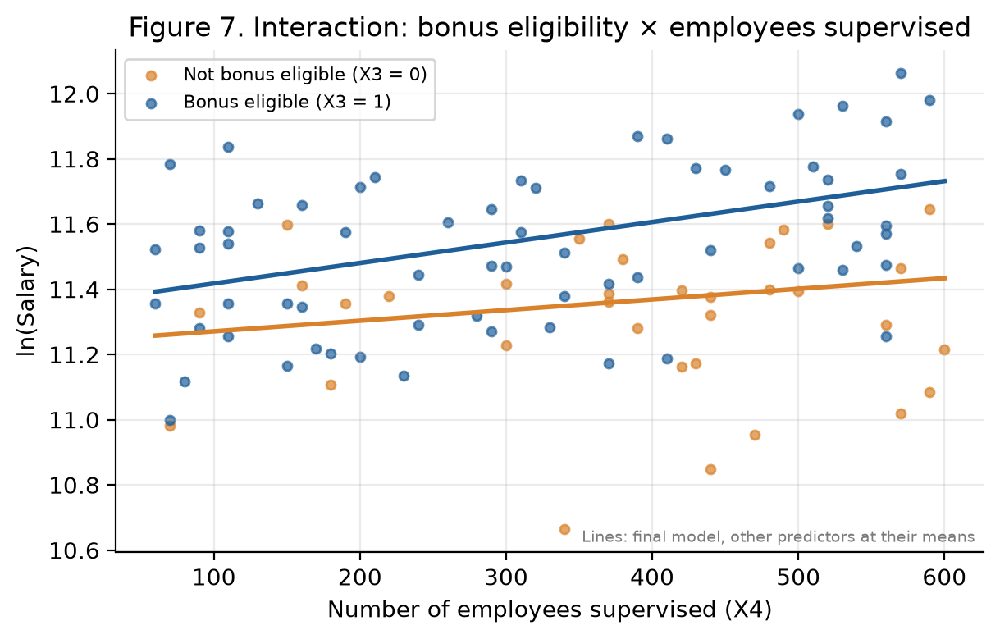
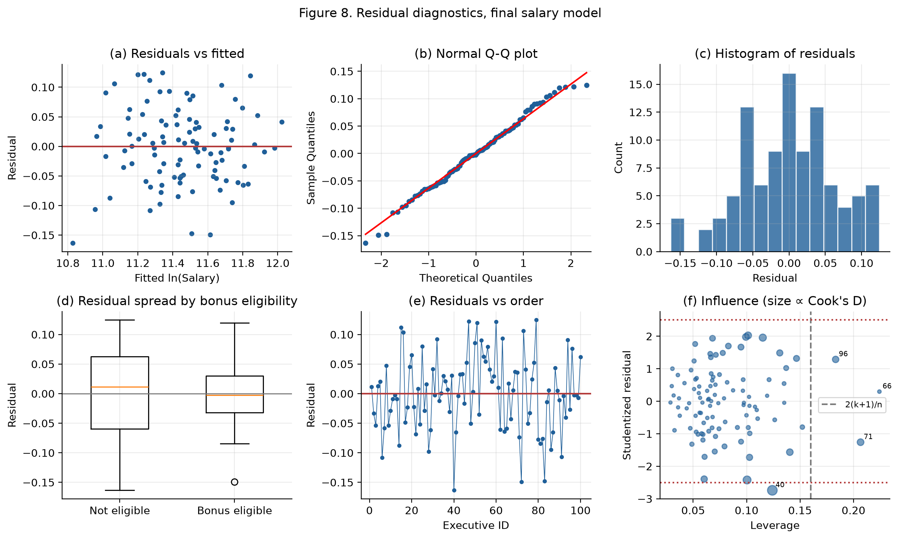

STA 4155 — Group Project
Baruch College
Group members and contribution
| Member | Assigned part | Contribution (%) |
|---|---|---|
All numerical results were produced with Python (pandas, statsmodels, SciPy, matplotlib). The code is submitted separately (analysis.py).
Study 1. Fire damage increases strongly and linearly with the distance between the house and the nearest fire station (r = 0.961). Each additional mile is associated with an estimated increase of $4,919 in average damage (95% CI $4,071 to $5,768). Distance explains 92.3% of the variation in damage, and the regression assumptions are reasonably satisfied.
Study 2. Of the ten candidate predictors, only experience (X1), education (X2), bonus eligibility (X3), employees supervised (X4) and corporate assets (X5) are related to log salary once the others are controlled for; board membership, age, profits, international responsibility and sales add nothing (partial F = 0.53, p = 0.756). The final model adds a diminishing-returns term for experience and a bonus × supervision interaction. It explains 94.0% of the variation in log salary (adjusted R² = 0.936) and has the smallest cross-validated prediction error of the models compared.
An insurance company wants to know whether, and how strongly, the damage from major residential fires is related to the distance from the burning house to the nearest fire station. The sample contains n = 15 recent fires; the response is damage (thousands of dollars) and the explanatory variable is distance (miles). There are no missing values.
| count | mean | std | min | 25% | 50% | 75% | max | |
|---|---|---|---|---|---|---|---|---|
| DISTANCE | 15.00 | 3.28 | 1.58 | 0.70 | 2.20 | 3.10 | 4.45 | 6.10 |
| DAMAGE | 15.00 | 26.41 | 8.07 | 14.10 | 20.95 | 26.10 | 31.30 | 43.20 |
Table 1. Descriptive statistics, Fires data.
The scatterplot (Figure 1) shows a strong, positive, linear association with no visible curvature and no obvious outliers. The sample correlation is r = 0.9610 (p < 0.001), so a straight-line model is appropriate. Distances range from 0.7 to 6.1 miles; conclusions apply only within this range.

Figure 1. Least-squares line with 95% confidence band for mean damage (dark) and 95% prediction band for an individual fire (light).
The model is Damage = β0 + β1Distance + ε, with ε ~ N(0, σ²) independent. The fitted line is
Damagê = 10.278 + 4.919 × Distance
| Estimate | Std. Error | t value | Pr(>|t|) | 95% CI low | 95% CI high | |
|---|---|---|---|---|---|---|
| Intercept | 10.2779 | 1.4203 | 7.2366 | 0.0000 | 7.2096 | 13.3463 |
| DISTANCE | 4.9193 | 0.3927 | 12.5254 | 0.0000 | 4.0709 | 5.7678 |
Table 2. Coefficient estimates, Study 1.
Slope. For each additional mile from the fire station, average fire damage increases by an estimated 4.919 thousand dollars (about $4,919). Intercept. The estimate 10.278 would be the average damage for a fire at zero distance; because the closest fire in the sample was 0.7 miles away, it is a slight extrapolation and should be read as the baseline damage that occurs regardless of distance. The residual standard error is se = 2.316 thousand dollars.
To test H0: β1 = 0 against Ha: β1 ≠ 0, t = 12.525 with 13 df (p < 0.001). We reject H0: distance is a significant linear predictor of damage. The 95% confidence interval for β1 is (4.071, 5.768) thousand dollars per mile; it excludes zero. The ANOVA F statistic (156.89) equals t², as expected in simple regression. The coefficient of determination is R² = 0.9235 (= r²): 92.3% of the variability in fire damage is explained by its linear relationship with distance.
| df | Sum Sq | Mean Sq | F value | Pr(>F) | |
|---|---|---|---|---|---|
| Regression | 1.0000 | 841.7664 | 841.7664 | 156.8862 | 0.0000 |
| Residual | 13.0000 | 69.7510 | 5.3655 | ||
| Total | 14.0000 | 911.5173 |
Table 3. Analysis of variance, Study 1.

Figure 2. Residual plots for the fire damage model.
Linearity and constant variance. The residuals vs fitted values (Figure 2a) scatter randomly around zero with no curve or funnel shape. The Breusch–Pagan test does not detect non-constant variance (LM = 0.182, p = 0.670). Normality. The points in the normal Q-Q plot (Figure 2c) lie close to the line, and the Shapiro–Wilk test does not reject normality (W = 0.9467, p = 0.474). Independence. The fires were sampled from different houses, which supports independence. As a check, the Durbin–Watson statistic is d = 1.318; with n = 15 and one predictor the 5% bounds are dL = 1.08 and dU = 1.36, so the test is inconclusive. Because the file order is not a time order, this is a weak concern; Figure 2b shows no systematic pattern.
Unusual observations. No studentized residual exceeds ±2, so there are no outliers. Fire 13 has high leverage (h > 2(k+1)/n = 0.267) because it lies at the extremes of distance. The most influential point is fire 13 (distance 6.1 mi, damage 43.2), with Cook's D = 0.471, well below 1. Refitting without it gives slope 4.584 and R² = 0.905, so the conclusions do not depend on this fire. No observations were removed.
Table 4 gives 95% confidence intervals for the mean damage and 95% prediction intervals for the damage of a single new fire at several distances. For example, for a house 3.5 miles from the station, the estimated mean damage is $27,496; we are 95% confident the average damage of all such fires is between $26,190 and $28,801, while the damage of one such fire is predicted to fall between $22,324 and $32,667. Prediction intervals are wider because they include the variability of an individual fire around the mean. Intervals are narrowest near the mean distance (3.28 mi) and should not be extended beyond 0.7–6.1 miles.
| Predicted damage | CI mean low | CI mean high | PI low | PI high | |
|---|---|---|---|---|---|
| Distance (mi) | |||||
| 1.0 | 15.20 | 12.87 | 17.52 | 9.68 | 20.72 |
| 2.0 | 20.12 | 18.43 | 21.80 | 14.84 | 25.40 |
| 3.5 | 27.50 | 26.19 | 28.80 | 22.32 | 32.67 |
| 5.0 | 34.87 | 32.93 | 36.82 | 29.50 | 40.24 |
| 6.0 | 39.79 | 37.15 | 42.44 | 34.13 | 45.45 |
Table 4. Estimated mean damage and individual predictions (thousands of dollars).
There is very strong evidence of a positive linear association between distance to the nearest fire station and fire damage. The model is simple, fits well and satisfies its assumptions, so it is useful for the insurer's pricing decisions within the observed range of distances. Because the data are observational, the result shows association, not causation: houses far from stations may also differ in size, construction or response times for other reasons. The sample (15 fires from one suburb) is small and may not generalize to other areas.
The goal is to find which of ten firm and executive characteristics are associated with executive salary, and to build a model that predicts salary well. Following the consulting company's practice, the response is Y = ln(Salary). The sample has n = 100 executives and no missing values. X3, X6 and X9 are 0/1 indicator (dummy) variables; the rest are quantitative. The ID column is only an identifier and is not used.
| mean | std | min | 50% | max | |
|---|---|---|---|---|---|
| Variable | |||||
| ln(Salary) | 11.46 | 0.26 | 10.66 | 11.46 | 12.06 |
| Experience (yrs) | 13.08 | 7.34 | 1.00 | 13.00 | 26.00 |
| Education (yrs) | 16.02 | 2.30 | 12.00 | 16.00 | 20.00 |
| Bonus eligible | 0.66 | 0.48 | 0.00 | 1.00 | 1.00 |
| Employees supervised | 340.10 | 167.18 | 60.00 | 360.00 | 600.00 |
| Corporate assets ($M) | 175.10 | 15.41 | 150.00 | 180.00 | 200.00 |
| Board member | 0.49 | 0.50 | 0.00 | 0.00 | 1.00 |
| Age (yrs) | 42.84 | 9.07 | 23.00 | 42.50 | 64.00 |
| Company profits ($M) | 7.70 | 1.55 | 5.00 | 8.00 | 10.00 |
| International resp. | 0.18 | 0.39 | 0.00 | 0.00 | 1.00 |
| Company sales ($M) | 24.83 | 2.74 | 20.00 | 25.00 | 30.00 |
Table 5. Descriptive statistics, Salaries data.
Log salary is most strongly correlated with experience (r = 0.79) and age (r = 0.63), followed by bonus eligibility (r = 0.40) and education, employees supervised and assets (r ≈ 0.2). Experience and age are highly correlated with each other (r = 0.77), so they carry overlapping information; the other predictors are nearly uncorrelated with one another (Figure 3). Board membership, profits, international responsibility and sales show almost no marginal association with salary (Figure 4).

Figure 3. Pairwise correlations.

Figure 4. Log salary versus each candidate predictor (red line: simple LS fit; boxplots for indicator variables).
We first fit Y = β0 + β1X1 + … + β10X10 + ε. The global F-test of H0: β1 = … = β10 = 0 gives F = 106.54 on 10 and 89 df (p < 0.001), so at least one predictor is useful. R² = 0.9229 and adjusted R² = 0.9142. The individual t-tests (Table 6) show that X1, X2, X3, X4, X5 are significant at α = 0.05, while X6, X7, X8, X9, X10 are not.
| Estimate | Std. Error | t value | Pr(>|t|) | 95% CI low | 95% CI high | |
|---|---|---|---|---|---|---|
| Intercept | 10.0219 | 0.1481 | 67.6921 | 0.0000 | 9.7277 | 10.3161 |
| X1 | 0.0279 | 0.0018 | 15.7453 | 0.0000 | 0.0244 | 0.0314 |
| X2 | 0.0290 | 0.0034 | 8.4753 | 0.0000 | 0.0222 | 0.0358 |
| X3 | 0.2243 | 0.0171 | 13.1350 | 0.0000 | 0.1904 | 0.2583 |
| X4 | 0.0005 | 0.0000 | 10.4432 | 0.0000 | 0.0004 | 0.0006 |
| X5 | 0.0020 | 0.0005 | 3.9011 | 0.0002 | 0.0010 | 0.0031 |
| X6 | -0.0154 | 0.0169 | -0.9122 | 0.3641 | -0.0489 | 0.0181 |
| X7 | -0.0005 | 0.0014 | -0.3545 | 0.7238 | -0.0034 | 0.0023 |
| X8 | -0.0026 | 0.0051 | -0.5135 | 0.6089 | -0.0128 | 0.0076 |
| X9 | -0.0266 | 0.0204 | -1.3040 | 0.1956 | -0.0670 | 0.0139 |
| X10 | -0.0010 | 0.0030 | -0.3303 | 0.7420 | -0.0069 | 0.0049 |
Table 6. Full model with all ten predictors.
Multicollinearity. All variance inflation factors are small (largest: X7, VIF = 2.91; Table 7), far below the usual warning level of 10. The only notable overlap is between experience and age: age is significant on its own but not once experience is in the model, meaning age has no additional explanatory value beyond experience.
| VIF | |
|---|---|
| Variable | |
| Experience (yrs) | 2.90 |
| Education (yrs) | 1.07 |
| Bonus eligible | 1.13 |
| Employees supervised | 1.16 |
| Corporate assets ($M) | 1.12 |
| Board member | 1.23 |
| Age (yrs) | 2.91 |
| Company profits ($M) | 1.09 |
| International resp. | 1.06 |
| Company sales ($M) | 1.13 |
Table 7. Variance inflation factors, full model.
Partial (nested) F-test. To test whether the five non-significant predictors can be dropped together, H0: β6 = β7 = β8 = β9 = β10 = 0, we compare the full model with the reduced model containing X1, X2, X3, X4, X5: F = 0.526 on 5 and 89 df, p = 0.756. We do not reject H0; the five variables can be removed without a significant loss of fit. The reduced model has adjusted R² = 0.9164, slightly higher than the full model.
All-subsets regression. As a check that does not depend on the order of testing, we fit all 210 − 1 = 1,023 possible first-order models. Figure 5 and Table 8 show the best model of each size. The highest adjusted R² occurs at 6 predictors, the smallest model with Cp ≤ p has 5 predictors, and BIC is minimized at 5 predictors. Cp and BIC both point to the same five variables (X1, X2, X3, X4, X5). The best 6-variable model (X1, X2, X3, X4, X5, X9) raises adjusted R² only from 0.9164 to 0.9170, so the simpler 5-variable model is preferred.

Figure 5. Best-subsets criteria; the dotted line marks the 5-predictor model.
| Predictors | R2 | Adj R2 | Cp | BIC | |
|---|---|---|---|---|---|
| k | |||||
| 1 | X1 | 0.6190 | 0.6151 | 343.8566 | -74.0574 |
| 2 | X1, X3 | 0.7492 | 0.7440 | 195.5192 | -111.2750 |
| 3 | X1, X3, X4 | 0.8391 | 0.8341 | 93.7538 | -151.0498 |
| 4 | X1, X2, X3, X4 | 0.9075 | 0.9036 | 16.8128 | -201.7790 |
| 5 | X1, X2, X3, X4, X5 | 0.9206 | 0.9164 | 3.6279 | -212.5080 |
| 6 | X1, X2, X3, X4, X5, X9 | 0.9220 | 0.9170 | 4.0235 | -209.6694 |
| 7 | X1, X2, X3, X4, X5, X6, X9 | 0.9225 | 0.9166 | 5.4499 | -205.7034 |
| 8 | X1, X2, X3, X4, X5, X6, X8, X9 | 0.9227 | 0.9159 | 7.1956 | -201.3830 |
| 9 | X1, X2, X3, X4, X5, X6, X7, X8, X9 | 0.9228 | 0.9151 | 9.1091 | -196.8748 |
| 10 | X1, X2, X3, X4, X5, X6, X7, X8, X9, X10 | 0.9229 | 0.9142 | 11.0000 | -192.3921 |
Table 8. Best model of each size.
Curvature in experience. Plotting the residuals of the 5-predictor model against each quantitative predictor (Figure 6) reveals an inverted-U pattern for experience: the first-order model under-predicts salaries for mid-career executives and over-predicts at both ends. Adding X12 is significant (partial F = 17.41, p < 0.001); the negative coefficient means salary rises with experience at a decreasing rate.

Figure 6. Residuals of the 5-predictor model with LOWESS smooth.
Interactions with bonus eligibility. It is natural to ask whether the payoff of experience, education, supervision or assets differs for bonus-eligible executives. Adding all four interactions X3·X1, X3·X2, X3·X4 and X3·X5 is jointly significant (F = 3.60, p = 0.009), but only X3·X4 is individually significant. After keeping it, the remaining three are not needed (F = 1.21, p = 0.309). Figure 7 illustrates the interaction: salaries rise faster with the number of employees supervised among bonus-eligible executives.

Figure 7. Fitted lines from the final model for each bonus group.
ln(Salary)̂ = 9.8618 + 0.04364 X1 + 0.03094 X2 + 0.11661 X3 + 0.00033 X4 + 0.00239 X5 − 0.00063 X12 + 0.00030 X3·X4
The final model is highly significant (F = 206.27, p < 0.001) with R² = 0.9401, adjusted R² = 0.9355 and residual standard error se = 0.0660 on the log scale. Every term is significant at the 5% level using both the usual and the heteroskedasticity-robust (HC3) standard errors (Table 9).
| Estimate | Std. Error | t value | Pr(>|t|) | 95% CI low | 95% CI high | HC3 p-value | |
|---|---|---|---|---|---|---|---|
| Intercept | 9.86182 | 0.09703 | 101.63415 | 0.00000 | 9.66910 | 10.05453 | 0.00000 |
| X1 | 0.04364 | 0.00376 | 11.60383 | 0.00000 | 0.03617 | 0.05111 | 0.00000 |
| X2 | 0.03094 | 0.00295 | 10.48748 | 0.00000 | 0.02508 | 0.03680 | 0.00000 |
| X3 | 0.11661 | 0.03696 | 3.15523 | 0.00217 | 0.04321 | 0.19001 | 0.01203 |
| X4 | 0.00033 | 0.00008 | 4.15180 | 0.00007 | 0.00017 | 0.00048 | 0.00138 |
| X5 | 0.00239 | 0.00044 | 5.38614 | 0.00000 | 0.00151 | 0.00327 | 0.00001 |
| I(X1 ** 2) | -0.00063 | 0.00014 | -4.58792 | 0.00001 | -0.00091 | -0.00036 | 0.00009 |
| X3:X4 | 0.00030 | 0.00009 | 3.26864 | 0.00152 | 0.00012 | 0.00049 | 0.00728 |
Table 9. Final model coefficients, with HC3 robust p-values.
Interpretation. Because the response is ln(Salary), a coefficient b corresponds to a 100(eb − 1)% change in (median) salary for a one-unit increase, holding the other variables constant.
• Education: each additional year is associated with 3.14% higher salary.
• Corporate assets: each additional $10 million is associated with 2.42% higher salary.
• Experience: the effect diminishes over a career — one more year adds about
3.8% at 5 years, 2.8% at 13 years and 1.8% at 20 years. The
curve would peak near 34 years, beyond the observed maximum of 26, so salary
never actually declines within the data.
• Employees supervised × bonus: 100 more employees supervised is associated with
3.3% higher salary for executives who are not bonus eligible and
6.5% for those who are. Equivalently, the bonus-eligibility premium
grows with responsibility: about 15.8% for an executive supervising 100 employees,
24.5% at the average of 340, and
34.7% at 600.
| Coefficient | Effect on median salary (%) | 95% CI low (%) | 95% CI high (%) | |
|---|---|---|---|---|
| Term | ||||
| X2: +1 year of education | 0.031 | 3.142 | 2.539 | 3.748 |
| X5: +$10M corporate assets | 0.002 | 2.420 | 1.521 | 3.327 |
| X4: +100 employees supervised (not bonus eligible) | 0.000 | 3.313 | 1.715 | 4.936 |
Table 10. Percentage effects with 95% confidence intervals.

Figure 8. Residual diagnostics, final model.
Linearity. After adding X12 the residuals vs fitted values (Figure 8a) show no remaining curvature. Normality. The Q-Q plot and histogram (8b, 8c) are consistent with normal errors (Shapiro–Wilk W = 0.9884, p = 0.535). Independence. The data are a cross-sectional sample of different executives; Durbin–Watson d = 1.827 is close to 2 and Figure 8e shows no pattern. Constant variance. The Breusch–Pagan test is significant (LM = 19.33, p = 0.007). The source is bonus eligibility: the residual standard deviation is 0.082 for non-eligible executives versus 0.052 for eligible ones (Figure 8d; BP test on X3 alone, p < 0.001). Salaries of executives without a bonus are therefore less predictable. Since this could make the usual standard errors unreliable, we recomputed them with HC3 robust standard errors: every term remains significant at the 5% level, so the conclusions are unchanged. The point estimates and predictions are still unbiased.
Unusual observations. Only executive 40 has a studentized residual beyond ±2.5 (-2.74), which is not unusual in a sample of 100. 3 executives have leverage above 2(k+1)/n = 0.16. The largest Cook's distance is 0.124 (executive 40), far below 1. Refitting without that executive changes no coefficient by more than 9% and no conclusion, so all observations were retained.
Because the model was chosen using the same data, we checked out-of-sample accuracy with 10-fold cross-validation repeated 20 times (Table 11). The final model has the lowest cross-validated root mean squared error, followed by the 5-predictor model; the full 10-predictor model predicts worst, confirming that the extra five variables mostly add noise.
| Predictors (p) | Adj R2 | AIC | CV RMSE (log scale) | |
|---|---|---|---|---|
| Full (10 predictors) | 10 | 0.9142 | -221.0490 | 0.0810 |
| Reduced (5 predictors) | 5 | 0.9164 | -228.1391 | 0.0779 |
| Final (5 + X1² + interaction) | 7 | 0.9355 | -252.2864 | 0.0697 |
Table 11. Model comparison (CV RMSE: lower is better).
Example. For a bonus-eligible executive with 10 years of experience, 16 years of education, 300 employees supervised and $175 million in corporate assets, the final model predicts ln(Salary) = 11.4532, i.e. a typical (median) salary of about $94,202. The 95% confidence interval for the median salary of all such executives is $92,244 to $96,201; the 95% prediction interval for one such executive is $82,497 to $107,567 (salary units assumed to be dollars; intervals are obtained by exponentiating the log-scale limits).
Executive salary at this firm is driven by experience, education, bonus eligibility, the number of employees supervised and corporate assets. Experience has the largest effect but with diminishing returns, and the reward for supervising more people is larger for bonus-eligible executives. Board membership, age (beyond experience), company profits, international responsibility and total sales are not associated with salary once these factors are controlled for. The final model explains about 94% of the variation in log salary and predicts better than the full model. Limitations: the data come from one firm and are observational, so effects are associations, not causal; the model was selected and evaluated on the same 100 executives (cross-validation reduces but does not remove this optimism); and salaries of non-bonus-eligible executives are more variable than the model's single error variance assumes.
Both studies show the value of a complete regression analysis rather than a single fitted equation. In Study 1, one predictor explains 92% of fire damage and all diagnostic checks support the model. In Study 2, formal tests (partial F), model-selection criteria (adjusted R², Cp, BIC), residual analysis and cross-validation lead consistently to a parsimonious model with five predictors, a quadratic term and one interaction. In both cases the results describe associations in observational data and should be applied only within the range of the observed predictors.
OLS Regression Results
==============================================================================
Dep. Variable: DAMAGE R-squared: 0.923
Model: OLS Adj. R-squared: 0.918
Method: Least Squares F-statistic: 156.9
Date: Sat, 07 Nov 2026 Prob (F-statistic): 1.25e-08
Time: 18:48:04 Log-Likelihood: -32.811
No. Observations: 15 AIC: 69.62
Df Residuals: 13 BIC: 71.04
Df Model: 1
Covariance Type: nonrobust
==============================================================================
coef std err t P>|t| [0.025 0.975]
------------------------------------------------------------------------------
Intercept 10.2779 1.420 7.237 0.000 7.210 13.346
DISTANCE 4.9193 0.393 12.525 0.000 4.071 5.768
==============================================================================
Omnibus: 2.551 Durbin-Watson: 1.318
Prob(Omnibus): 0.279 Jarque-Bera (JB): 1.047
Skew: -0.003 Prob(JB): 0.592
Kurtosis: 1.706 Cond. No. 9.13
==============================================================================
Notes:
[1] Standard Errors assume that the covariance matrix of the errors is correctly specified.
OLS Regression Results
==============================================================================
Dep. Variable: Y R-squared: 0.923
Model: OLS Adj. R-squared: 0.914
Method: Least Squares F-statistic: 106.5
Date: Sat, 07 Nov 2026 Prob (F-statistic): 4.41e-45
Time: 18:48:04 Log-Likelihood: 121.52
No. Observations: 100 AIC: -221.0
Df Residuals: 89 BIC: -192.4
Df Model: 10
Covariance Type: nonrobust
==============================================================================
coef std err t P>|t| [0.025 0.975]
------------------------------------------------------------------------------
Intercept 10.0219 0.148 67.692 0.000 9.728 10.316
X1 0.0279 0.002 15.745 0.000 0.024 0.031
X2 0.0290 0.003 8.475 0.000 0.022 0.036
X3 0.2243 0.017 13.135 0.000 0.190 0.258
X4 0.0005 4.92e-05 10.443 0.000 0.000 0.001
X5 0.0020 0.001 3.901 0.000 0.001 0.003
X6 -0.0154 0.017 -0.912 0.364 -0.049 0.018
X7 -0.0005 0.001 -0.355 0.724 -0.003 0.002
X8 -0.0026 0.005 -0.513 0.609 -0.013 0.008
X9 -0.0266 0.020 -1.304 0.196 -0.067 0.014
X10 -0.0010 0.003 -0.330 0.742 -0.007 0.005
==============================================================================
Omnibus: 0.106 Durbin-Watson: 2.121
Prob(Omnibus): 0.949 Jarque-Bera (JB): 0.212
Skew: 0.072 Prob(JB): 0.899
Kurtosis: 2.826 Cond. No. 8.07e+03
==============================================================================
Notes:
[1] Standard Errors assume that the covariance matrix of the errors is correctly specified.
[2] The condition number is large, 8.07e+03. This might indicate that there are
strong multicollinearity or other numerical problems.
Reduced vs full (drop non-significant predictors) df_resid ssr df_diff ss_diff F Pr(>F) 0 94.0 0.530414 0.0 NaN NaN NaN 1 89.0 0.515202 5.0 0.015212 0.525583 0.756326 Reduced vs reduced + X1^2 df_resid ssr df_diff ss_diff F Pr(>F) 0 94.0 0.530414 0.0 NaN NaN NaN 1 93.0 0.446774 1.0 0.08364 17.410455 0.000068 Quadratic vs quadratic + all X3 interactions df_resid ssr df_diff ss_diff F Pr(>F) 0 93.0 0.446774 0.0 NaN NaN NaN 1 89.0 0.384550 4.0 0.062224 3.600278 0.009092 Final vs all X3 interactions df_resid ssr df_diff ss_diff F Pr(>F) 0 92.0 0.400288 0.0 NaN NaN NaN 1 89.0 0.384550 3.0 0.015738 1.214161 0.309299
OLS Regression Results
==============================================================================
Dep. Variable: Y R-squared: 0.940
Model: OLS Adj. R-squared: 0.936
Method: Least Squares F-statistic: 206.3
Date: Sat, 07 Nov 2026 Prob (F-statistic): 2.35e-53
Time: 18:48:04 Log-Likelihood: 134.14
No. Observations: 100 AIC: -252.3
Df Residuals: 92 BIC: -231.4
Df Model: 7
Covariance Type: nonrobust
==============================================================================
coef std err t P>|t| [0.025 0.975]
------------------------------------------------------------------------------
Intercept 9.8618 0.097 101.634 0.000 9.669 10.055
X1 0.0436 0.004 11.604 0.000 0.036 0.051
X2 0.0309 0.003 10.487 0.000 0.025 0.037
X3 0.1166 0.037 3.155 0.002 0.043 0.190
X4 0.0003 7.85e-05 4.152 0.000 0.000 0.000
X5 0.0024 0.000 5.386 0.000 0.002 0.003
I(X1 ** 2) -0.0006 0.000 -4.588 0.000 -0.001 -0.000
X3:X4 0.0003 9.24e-05 3.269 0.002 0.000 0.000
==============================================================================
Omnibus: 0.388 Durbin-Watson: 1.827
Prob(Omnibus): 0.824 Jarque-Bera (JB): 0.545
Skew: -0.113 Prob(JB): 0.762
Kurtosis: 2.717 Cond. No. 7.82e+03
==============================================================================
Notes:
[1] Standard Errors assume that the covariance matrix of the errors is correctly specified.
[2] The condition number is large, 7.82e+03. This might indicate that there are
strong multicollinearity or other numerical problems.
OLS Regression Results
==============================================================================
Dep. Variable: Y R-squared: 0.940
Model: OLS Adj. R-squared: 0.936
Method: Least Squares F-statistic: 184.1
Date: Sat, 07 Nov 2026 Prob (F-statistic): 3.14e-51
Time: 18:48:04 Log-Likelihood: 134.14
No. Observations: 100 AIC: -252.3
Df Residuals: 92 BIC: -231.4
Df Model: 7
Covariance Type: HC3
==============================================================================
coef std err t P>|t| [0.025 0.975]
------------------------------------------------------------------------------
Intercept 9.8618 0.130 76.011 0.000 9.604 10.119
X1 0.0436 0.004 10.115 0.000 0.035 0.052
X2 0.0309 0.003 9.106 0.000 0.024 0.038
X3 0.1166 0.046 2.562 0.012 0.026 0.207
X4 0.0003 9.88e-05 3.300 0.001 0.000 0.001
X5 0.0024 0.001 4.718 0.000 0.001 0.003
I(X1 ** 2) -0.0006 0.000 -4.090 0.000 -0.001 -0.000
X3:X4 0.0003 0.000 2.745 0.007 8.35e-05 0.001
==============================================================================
Omnibus: 0.388 Durbin-Watson: 1.827
Prob(Omnibus): 0.824 Jarque-Bera (JB): 0.545
Skew: -0.113 Prob(JB): 0.762
Kurtosis: 2.717 Cond. No. 7.82e+03
==============================================================================
Notes:
[1] Standard Errors are heteroscedasticity robust (HC3)
[2] The condition number is large, 7.82e+03. This might indicate that there are
strong multicollinearity or other numerical problems.